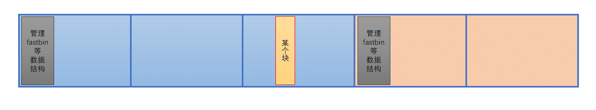
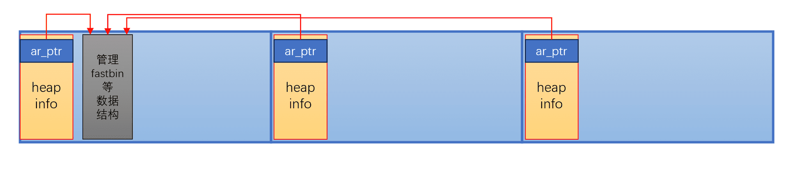

arena
arena 就是多个 Heap 组成的区域，每次 Heap 不够用了，然后就会申请下一个 Heap，而这多个 Heap 组成的区域就是 arena。
对于单线程而言，heap 的管理很简单，此时用的是全局变量 main_arena，即通过这个变量去找 fastbin 在哪里等等操作。但是对于多线程而言，heap 的管理就复杂了，下面进行详细介绍。
多线程下共用单 heap 问题
在以前，glibc 多线程也是使用一个堆空间，但这个效率会很低。
首先：多线程并不意味着轮流执行，同一时刻只有一个线程运行。在现代多核 CPU 中，真的有可能是在同时运行。
CPU Core 0 → Thread A
CPU Core 1 → Thread B
CPU Core 2 → Thread C
CPU Core 3 → Thread D
其次：多线程意味着要上锁，而 malloc 和 free 不是原子操作，所以如果在中途退出，那么会大大降低效率。
Thread A -> malloc
Thread A -> lock heap
Thread A -> malloc 还未结束时退出
Thread B -> malloc
Thread B -> lock heap -> 被占用，等待 heap 被释放
解决思路：各线程都有各自 heap
那么如何改善，显然让各个线程都有各自的 heap，这个就非常好，各个线程各自进行 malloc 和 free 的时候，不用担心上锁的问题。
当时我的一个疑问：教科书上不是说多线程中共享栈、共享堆的吗？如果各个线程自己有各自堆，那还是共享吗？
回答：还是共享。因为这里的各自的堆不是说看不见的，举例而言：
1. Thread A 申请了一个数组data，那么它的内容地址在 Heap A 中，那么 Thread B 也是知道这个data的地址的（为什么知道，这种全局变量可能是保存在一段共享内存）。
2. Thread B 依然可以访问或者修改data，只不过这个时候就触发了访问 Heap A，此时需要加把锁才行，那看来还是需要有锁机制。
3. 总结而言，Thread 访问 Heap(即便是自己的)依然需要锁机制，只不过这种的资源竞争概率比共用一个 Heap 大幅度降低。
实际情况：线程和 heap 不是一对一
但实际情况不是这样的，一个程序可能会开好多个线程，这样要好多 heap 空间，我们知道 heap 大小一般是固定的，比如 132KB，可想而知这样有多可怕。
所以其实是线程共用一个 heap 池，即 heap 有最大数量。对于 32-bit 系统，是 1+2*CoreNum；对于 64-bit 系统，是 1+8*CoreNum。
举例而言，假设一个多线程应用，是主线程 + 3 个用户线程，而系统上限是只能创建 3 个 Heap，共享过程如下：
- 主线程第一次调用 malloc：使用已存在的 main arena，无竞争。
- 线程 1 和线程 2 第一次调用 malloc：各自创建新的 arena 并使用，仍然无竞争。到这里为止，线程与 arena 仍是 一对一 的关系。
-
线程 3 第一次调用 malloc：发现已超过限制，于是不再新建 arena，而是遍历已有的 arena，尝试对某个 arena 加锁：
- 若成功（例如成功锁住 main arena），则将该 arena 返回给线程 3 使用；
- 若所有 arena 都被占用，则阻塞，等待下一个可用的 arena（比如之后线程 2 的
malloc完成结束，它释放了锁）
-
假如线程 3 成功锁住某个 arena，那么线程 3 以后就默认用这个 arena 了。（这是我的个人理解）
其实上面的过程，就是每个 Heap 加上锁机制。还是要强调一个观点：多个线程共用 heap 没有关系，只要上锁解锁能弄好就行。
对于上面第 4 小点，为什么我会个人认为会默认尽量让线程和 arena 绑定关系不动呢？因为我认为线程大部分都是操控自己申请的变量，比如线程 A 申请了 pa=malloc(0x100)、线程 B 申请了 pb=malloc(0x100)，那么线程 A 大部分时候是对 pa 进行操作，而不是操作别人申请的变量。所以默认不动 arena，这样大概率不会要等待锁。
实际情况：arena 和 heap
上面的讲解中，都认为是对 Heap 进行和线程的绑定，其实是 arena，它是多个 Heap 组成的区域。一开始的时候 arena 里面只有一个 Heap（如默认的 132KB），当 Heap 用完之后，系统就会再申请一个 Heap，如此反复。
这个会给上面的多线程带来一个问题：arena 里面管理了 fastbin 等等链表，这个肯定是放在头部的，当有多个 Heap 的时候，释放某个块时，如何知道他是哪一个 arena？
如下图所示，蓝色和粉色是不同的 arena，他们各自有三个和两个 Heap。现在释放某个块的时候，肯定要更新 fastbin 等链表，那么怎么去找到蓝色 arena 头部的管理结构？即如何找到 arena 的基地址？

当 arena 只有一个 heap 的时候，其实很好知道基地址，即 (ptr) & ~(HEAP_MAX_SIZE - 1) 就行了。但是多个 heap 就不可以了，这里脑洞一下，看到这里我感觉这个很像磁盘管理，所以可以使用 FAT 等文件系统的做法：
- 如果 heap 是连续的，我们可以在每个 heap 的开头标上自己属于 arena 第几个 heap 了，这样可以迅速找到第一个 heap 的地址。
- 如果 heap 不是连续的，我们可以在每个 heap 的开头标上
prev和next指针。
这里说一下 glibc 的做法，其实它有点像第二小点，在开头标上指针。这里的管理内容叫 heap_info，只不过 heap_info 里面其中一项存的是 ar_ptr，即管理 fastbin 链表等数据结构的地方。如下图所示：

当时的疑问：为什么需要这么麻烦？每个线程中保存一个 arena 的变量不就可以了？
回答：当前操作的块不一定就是自己 arena 中的。比如在 Thread A 是生产者，它不断申请了块p=malloc(0x20)；而 Thread B 是消费者，它不断的free(p)。对于 Thread B 来说，此时p不在 arena b 中，所以只能通过这种方式进行。
其他说明
在 chunk 的 size 中，末尾三位用于一些特殊含义，比如最后一位是 prev_in_use，而倒数第三位就是 NON_MAIN_ARENA，这个就是用于表示 chunk 是否是 main arena 中的。如果是的，直接用全局变量 main_arena 即可；如果不是，则需要按照上面的规则，先找 heap_info，再找 ar_ptr。